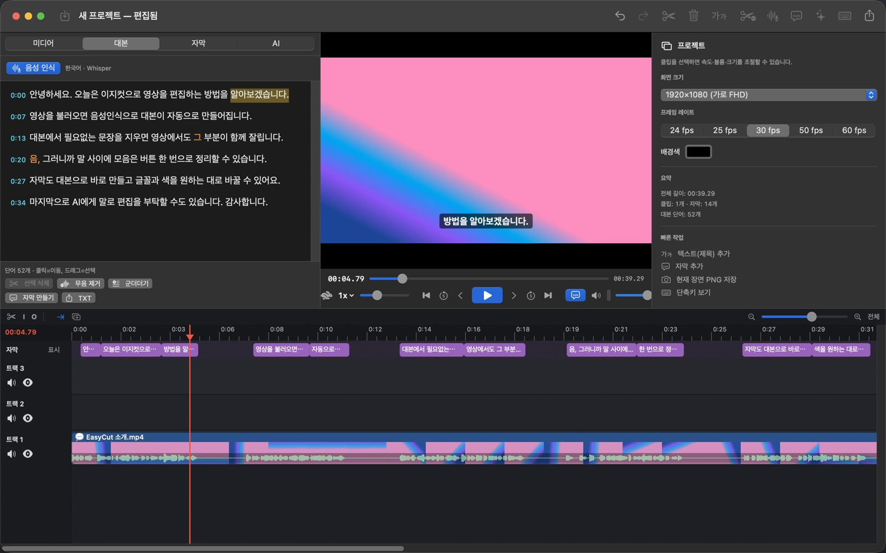

내 채널에서 방송
Google 계정으로 YouTube에 연결하고
비공개 방송도 예약하세요.
Mac · Windows용 무료 영상 스튜디오
화면과 카메라를 원하는 곳에 놓고 방송하세요. 녹화를 마치면 방송 중 바꾼 장면이 편집 타임라인에 그대로 열립니다.
Google 계정으로 YouTube에 연결하고
비공개 방송도 예약하세요.
화면과 카메라의 위치, 크기, 겹치는 순서를
바꾸고 방송 중에 전환하세요.
화면과 카메라가 별도 트랙에 담겨
원하는 구간부터 다시 다듬을 수 있습니다.
녹화한 말을 대본에서 읽으며 편집하세요. 단어를 지우면 해당 영상이 잘리고, 남은 클립은 타임라인에서 바로 이어집니다.
단어를 눌러 빼거나 다시 넣어 보세요.

카메라 배경
배경만 흐리거나 내 사진을 넣어 녹화하세요. 아래 기본 배경을 누르면 발표자에게 적용한 모습을 미리 볼 수 있습니다.
EasyCut 다운로드AI 도구
정식 배포판
기본 녹화·방송·편집은 무료입니다.
AI 구독과 API 사용료는 별도입니다.
Apple Silicon M1 이상 · macOS 14 이상
Mac용 다운로드DMG를 열어 EasyCut을 응용 프로그램 폴더로 옮기세요. 처음 실행할 때 macOS가 확인을 요구하면 시스템 설정의 개인정보 보호 및 보안에서 앱 이름을 확인하세요.
녹화를 30초 단위로 저장해 앱이 갑자기 꺼져도 다음 실행 때 복구합니다. 1시간 녹화도 정지 후 약 20초면 파일 하나로 완성됩니다.
Windows 10·11 · 64비트(x64)
Windows용 다운로드받은 EXE 파일을 실행하고 설치 안내를 따르세요. 이 설치본에는 게시자 서명이 없어 Windows SmartScreen이 확인을 요청할 수 있습니다.